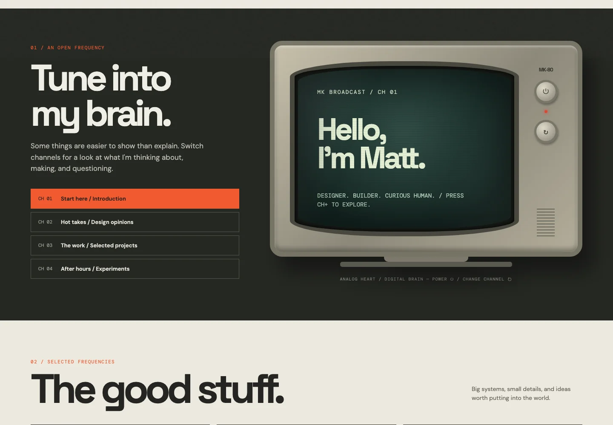
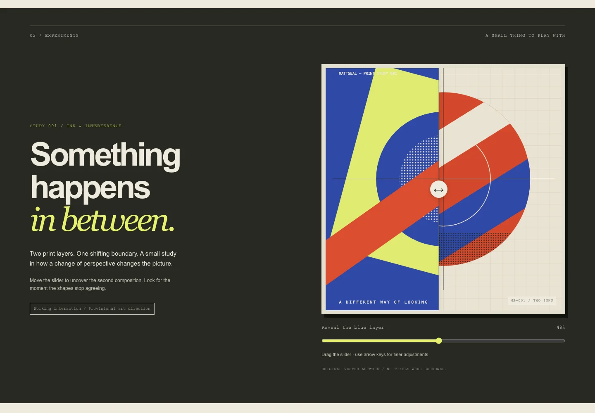
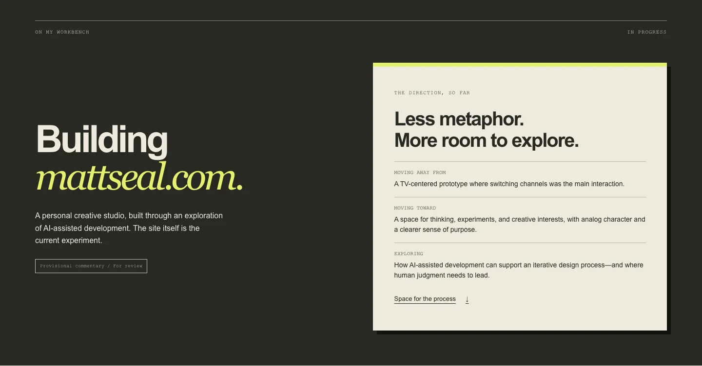
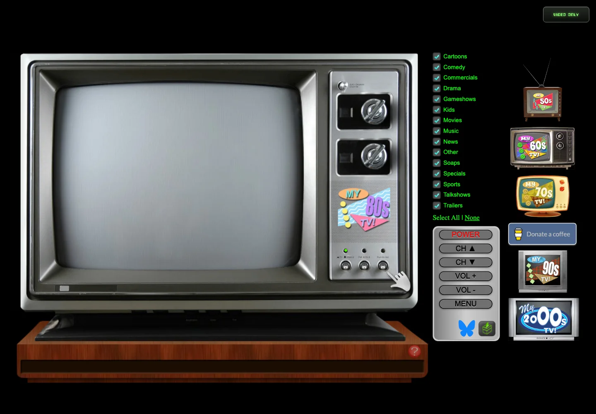

Loading historical version…

I'm Matt. I design products, collect interesting ideas, and occasionally build things just to see what happens.
One website. Five iterations. A running experiment in what happens when ideas meet execution.
Building mattseal.com with AI, from a TV interface to an open studio.

Loading historical version…

Oversized type, paper textures, and a two-layer print study explored a more editorial direction.
The reveal slider added interaction, but its visual payoff did not give visitors enough meaningful content.
Loading historical version…

The homepage became a personal creative studio for work in progress, thinking, and creative interests.
Keep the expressive visual foundation. Let real content decide what deserves an interaction.
Loading historical version…
Explore a version here, or open the full site in a new tab.
As AI makes building easier, design judgment about what deserves to exist becomes more important.
Process notes haven't been added yet.
My 80s TV brings channel surfing to the browser. Turn it on and explore.

Launch the original TV experience in a new tab.
Loading the TV connects to an external website and its media providers. Playback may include sound.
Matthew Kearney aka Matt Seal. 1 part product designer, 1 part curious human.
This is where I try things and think out loud.
Retro TV
A television-shaped interface made channel switching the central way to explore.
The metaphor gave the prototype character, but put the interface ahead of the content.